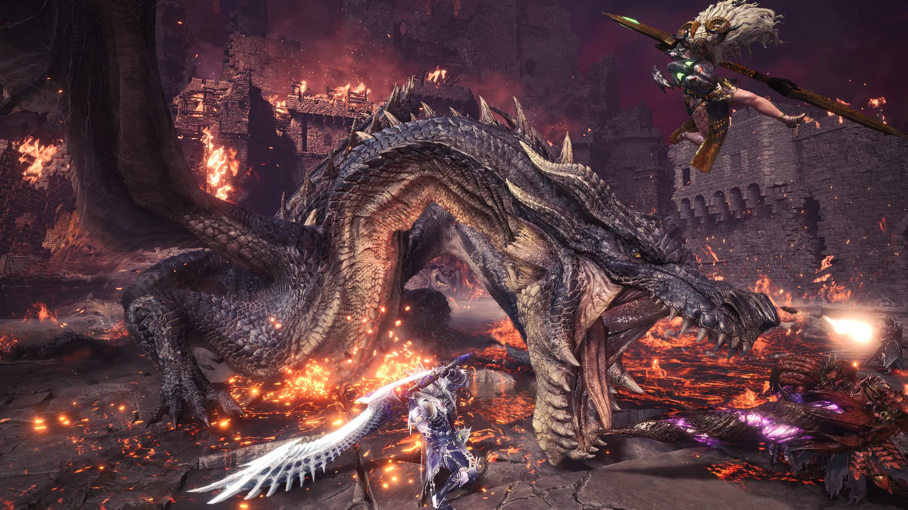
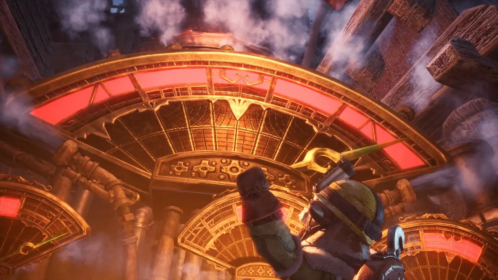

Descubre Monster Hunter: World | Iceborne - La expansión definitiva
Bienvenido a Iceborne, la expansión definitiva que lleva la cacería a otro nivel. Adéntrate en el Arroyo de Escarcha, una región gélida y vasta repleta de nuevos ecosistemas, terrenos extremos y criaturas letales como el imponente Velkhana. Con un arsenal evolucionado, nuevas armas, habilidades y la desafiante dificultad "Rango Maestro", esta expansión pondrá a prueba tus habilidades como nunca antes. Explora, caza y personaliza a tu cazador mientras disfrutas de misiones, eventos y actualizaciones constantes en un mundo que nunca deja de sorprender. ¡Prepárate para la aventura más épica de Monster Hunter y conquista Iceborne!
COMPRA YANUEVOS MONSTRUOS
Enfréntate a Nuevos Monstruos en Monster Hunter World: Iceborne, donde cada cacería es más épica que la anterior. Desde el majestuoso y gélido dragón anciano Velkhana hasta la brutal fuerza del Banbaro y el aterrador rugido del Beotodus, cada criatura en el Arroyo de Escarcha ofrece un desafío único. Además, favoritos renovados como el electrizante Zinogre,el devastador Tigrex o el temido Brachydios regresan con más ferocidad que nunca. Prepárate para batallas inolvidables, mecánicas sorprendentes y un bestiario que hará que cada enfrentamiento sea un espectáculo inolvidable. ¡Iceborne lleva tus habilidades al límite con monstruos diseñados para los cazadores más audaces!
NUEVAS FUNCIONES
Descubre Seliana

Seliana es la base central de los cazadores en Monster Hunter: World | Iceborne, un helado refugio donde se gestionan misiones, se mejora equipo y se prepara a los cazadores para enfrentar los monstruos más temibles. Con su arquitectura única que mezcla tecnología avanzada y naturaleza, Seliana alberga talleres de forja, salas de misión y muchas más posibilidades. Es el lugar clave para reabastecerse, intercambiar información y unirse con otros cazadores antes de enfrentarse a los desafíos más peligrosos.
Rango Maestro
El Rango Maestro de Monster Hunter: World es el nivel definitivo para los cazadores más experimentados, donde los monstruos se vuelven más poderosos, inteligentes y desafiantes. Accede a nuevas misiones, regiones y criaturas imponentes mientras pones a prueba tus habilidades al máximo. En este rango, podrás obtener equipo exclusivo y mejorar tus armas y armaduras al nivel más alto. Si estás listo para enfrentar el desafío supremo, el Rango Maestro es donde tu verdadera prueba comienza. ¡Prepárate para cazar como nunca antes!
Máquina de Vapor
La Máquina de Vapor en Monster Hunter: World Iceborne es una herramienta clave en la base de Seliana que te permite transformar materiales recolectados en recursos valiosos, como pociones, trampas y objetos exclusivos para mejorar tu equipo. Esta máquina optimiza el proceso de recolección y fabricación, permitiéndote enfocarte en lo más importante: la caza. Con su ayuda, podrás mejorar tu rendimiento y estar mejor preparado para enfrentar los monstruos más desafiantes de Iceborne.